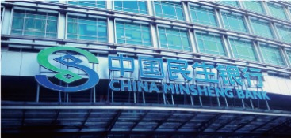
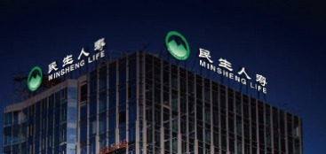
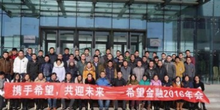
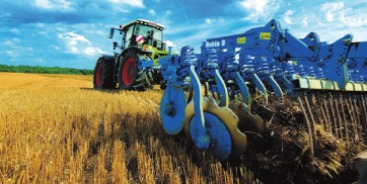

-
银行业
1996年1月12日，新希望集团董事长刘永好联合东方集团张宏伟，中国泛海控股集团卢志强，中国船东互保协会王 玉贵和巨人集团史玉柱等倡导发起的中国民生银行股份公司（简称“中国民生银行”）成立。新希望集团长期作 为中国民生银行的重要股东，刘永好先生担任副董事长。
中国民生银行是我国首家主要由非公有制企业入股的全国性 中国民生银行是我国首家主要由非公有制企业入股的全国性股份制商业银行，与民营经济有着与生俱来的 血脉联系，自诞生起，中国民生银行就不断探索中小企业金融服务。经过十余年的发展，民生银行已经成长 为一家优质的中型商业上市银行，并且不断创新发展方式，创造持续的商业与社会价值。 -
四川希望银行（以下简称“希望银行”）由新希望集团有限公司、四川银米科技有限责任公司（小米科技全资子 公司）、成都红旗连锁股份有限公司及其他5家优质民营企业共同发起设立。2016年6月，希望银行正式获得中国 银监会批复筹建，成为四川省首家民营银行。希望银行注册资本30亿元人民币，新希望集团、银米科技、红旗连 锁分别认购总股本30%、29.5%和15%的股份。
作为最大股东，新希望集团旗下拥有中国现代农业领域最大的全产业链企业，具备超过30年实体产业积淀和基础 ，客户遍及全国和产业链的各个环节。同时，新希望是中国最早涉足金融领域的民营企业之一，成功发起设立了 民生银行，具备20余年成功丰富的金融行业投资和管理经验，为希望银行提供了强有力的支持。希望银行的主要 发起股东分别在民营金融、移动互联网和线下应用场景方面等方面具有的独特优势，使希望银行先天具有独特的差 异化发展优势。 -
保险业
新希望集团是中国民生人寿保险公司的主要发起股东之一。民生人寿保险股份有限公司 2003年正式开业，注册资 本60亿元。公司经营范围包括人寿保险、健康保险、意外伤害保险、上述保险业务的再保险业务和资金运用业务 民生人寿保险股份有限公司由全国工商联牵头、21家企业发起设立。后经中国保险监督管理委员会批准，吸收新 加坡亚洲联合控股有限公司参股，现有股东22家，公司实收资本金为8.73亿元人民币。公司的主要股东包括新希 望集团、万向集团公司、中国泛海控股有限公司、中国有色金属建设股份有限公司等。
民生人寿保险股份 有限公司由全国工商联牵头、21家企业发起设立。后经中国保险监督管理委员会批准，吸收新加坡亚洲联合控股有 限公司参股，现有股东22家，公司实收资本金为8.73亿元人民币。公司的主要股东包括新希望集团、万向集团公 司、中国泛海控股有限公司、中国有色金属建设股份有限公司等。
-
供应链金融
新希望慧农（天津）科技有限公司（简称“希望金融”）是新希望集团旗下成员之一，由新希望集团、新希望六和 股份有限公司投资成立，是国内第一批专注于农牧供应链金融的互联网金融服务平台。
依托于新希望集团产业集群30多年来在农牧业和金融业的深厚积淀和优质产业链资源，“希望金融”通过互联网优 化、串联农牧供应链上、中、下游资金渠道，为从事农牧产业的广大农村小微企业及优质农户提供更低成本、更高 效率、更可靠安全的金融解决方案，同时为广大机构、个人等投资者提供安全、专业、高效的财富管理服务。未来 ，希望金融将继续夯实各环节的实力，坚持深挖细分行业，深耕三农领域，在三农及供应链项目融资，移动理财、 产业大数据及农村征信等方面发力，致力于打造中国农村互联网金融第一品牌。 -
新希望集团凭借在农牧业耕耘多年的经验和对农户的深入了解，充分整合社会资源、政府资源和金融资源，建设 农村普惠担保体系，设立了近20家农村担保公司，为农户扩大生产规模和技术改造提供资金担保服务，开创了以 养殖担保为主体的农村金融服务模式。
惠农牧担保公司在2009年12月成立，注册资金1.5亿元。依托新希望集团强大的农牧产业链系统为支撑，对接金融 部门及相关企业等多方资源，开展担保业务，服务广大农牧业客户。自成立以来，已累计为农户提供担保贷款超 过130亿元，仅2010年—2013年，普惠担保体系扶持的客户养殖产值就达到247多亿元。其经营模式得到社会的广泛 认可，真正成为了各大国有银行及股份制商业银行在农业金融业务上的战略合作伙伴。 -
新希望（天津）商业保理有限公司
新希望（天津）商业保理有限公司于2014年8月14日正式成立于天津经济技术开发区，是新希望集团全资子公司， 注册资本1亿元，是我国“三农”领域第一家商业保理公司。天津保理致力为中小微企业及农户提供低利率成本的 融资服务，以“手续简单、产品设计灵活，放款高效”的产品特点，努力协助客户嫁接新希望集团诸多业务板块 ，助力客户业务领域开拓。
在深入了解农业行业经营特点的基础上，天津保理为农牧产业链上下游客户提供综合金融服务，增加客户粘性， 进而提升产业链价值。保理融资业务方面主要为合作社/养殖户、经销商等提供保理服务；保理担保业务方面主要 为在银行直接融资有困难的核心企业的上下游客户提供保理服务；居间保理业务方面主要为有大量优质应收账款 的优质企业提供保理服务；再保理业务方面主要为有大量优质客户的商业保理公司提供保理服务。天津保理目前 已获得中国农业银行、中国银行、浦发银行、天津银行、交通银行等多家银行授信支持，累积近6亿元。
新希望财务有限公司
新希望财务有限公司于2010年经中国银监会批准设立，由新希望集团有限公司等五家公司共同出资设立。2011年1月，新希 望财务有限公司开业，注册资本为5.32亿元人民币，是四川省第一家民营企业集团财务公司。
新希望财务有限公司作为向集团及成员单位提供优质金融产品和金融服务的重要机构，是提升管理水平、提高资金效率、 拓宽融资渠道和防范金融风险的重要手段，也是投资理财、创造价值的重要平台。